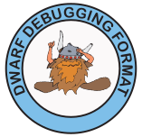

调试信息标准：DWARF

上一章我们把程序从源码送到了进程：编译、链接、加载、地址换算，调试器终于知道“代码在哪儿、数据在哪儿”。但知道地址还不够，用户说的是 main.go:19、pid、main.main，调试器要在源码和机器之间来回翻译。完成这层翻译的，就是调试信息。
重建源码视角之难
将人类可读的代码编译成处理器能够执行的二进制形式，是一个相当复杂的过程。它本质上是将源代码逐步转换成越来越简单的形式，在每一步都丢弃信息，最终得到处理器能够理解的一系列简单指令、寄存器、内存地址和二进制值。处理器并不关心你使用了面向对象编程、模板还是智能指针，它只理解对有限数量的寄存器和内存位置执行的非常基础的操作。
编译器在读取和解析源代码时，会收集关于程序的信息，例如变量或函数声明和使用的行号。语义分析则在此基础上，补充变量类型和函数参数等细节。优化阶段可能会重新排列代码结构、合并相似的代码片段、展开内联函数，或者删除冗余的部分。最后，代码生成器将程序的内部表示转换成实际的机器指令。为了进一步提升效率，通常还会对机器代码进行 peephole optimization（窥孔优化），这是一种局部优化技术，例如将几条指令改写成更高效的指令、消除重复指令等。
编译器越能实现创建紧凑且快速代码的目标，结果就越可能难以理解。在转换过程中，编译器会收集关于程序的信息，这些信息在后续调试时会非常有用。这里存在两个挑战：一是编译器可能难以将它所做的更改与程序员最初编写的源代码联系起来；二是如何在足够详细地描述可执行程序及其与原始源代码的关系的同时，保持描述的简洁性，避免占用过多空间或消耗过多处理器时间。
调试信息格式
软件调试领域，曾经出现了如下几种调试格式，但是都存在这样那样的问题，比如 stabs、COFF、PE-COFF、OMF、IEEE-695，而 DWARF 算是后起之秀吧。
“stabs” 这个名字源于符号表字符串，因为最初的调试数据以字符串的形式保存在 Unix a.out 对象文件符号表中。Stabs 使用文本字符串来编码程序的信息。它最初非常简单，但随着时间的推移，演变成一种相当复杂、有时难以理解且不太一致的调试格式。Stabs 既没有标准化，文档也比较匮乏。Sun Microsystems 对 stabs 进行了许多扩展，GCC 也进行了其他扩展，试图逆向工程 Sun 的扩展。尽管如此，stabs 仍然被广泛使用。
COFF 代表 Common Object File Format，起源于 Unix System V Release 3。在 COFF 格式中定义了基本的调试信息，但由于 COFF 支持命名部分，因此各种不同的调试格式，例如 stabs，都与 COFF 一起使用。COFF 的主要问题在于，尽管名称中包含“Common”，但它在不同的体系结构上并不完全一致。COFF 存在多种变体，包括 XCOFF（用于 IBM RS/6000）、ECOFF（用于 MIPS 和 Alpha）和 Windows PE-COFF。这些变体的文档可用性各不相同，但对象模块格式和调试信息均未标准化。
PE-COFF 是 Microsoft Windows 从 Windows 95 开始使用的对象模块格式。它基于 COFF 格式，包含 COFF 调试数据以及 Microsoft 自己的专有 CodeView 或 CV4 调试数据格式。关于调试格式的文档既不完整，又难以获取。
OMF 代表 Object Module Format，是 CP/M、DOS 和 OS/2 系统以及少量嵌入式系统使用的对象文件格式。OMF 定义了调试器使用的公共名称和行号信息，并且可以包含 Microsoft CV、IBM PM 或 AIX 格式的调试数据。OMF 仅提供对调试器的最基础的支持。
IEEE-695 是一种由 Microtec Research 和 HP 在 20 世纪 80 年代末联合开发的标准对象文件和调试格式，用于嵌入式环境。它于 1990 年成为 IEEE 标准。这是一种非常灵活的规范，旨在适用于几乎任何机器架构。调试格式采用块结构，更好地反映了源代码的组织方式。尽管它是一个 IEEE 标准，但在很多方面，它更像一种专有格式。虽然原始标准可以从 IEEE 获得，但 Microtec Research 对其进行了扩展以支持 C++ 和优化代码，这些扩展记录不详。IEEE 标准从未修改以纳入 Microtec Research 或其他更改。尽管它是一个 IEEE 标准，但它的使用仅限于少数小型处理器。
DWARF 是现在广泛使用的调试信息格式（尽管最初设计用于 ELF 文件）。“DWARF”一词源于中世纪幻想小说，本身没有官方含义。后来，人们提出了“Debugging With Attributed Record Formats”作为 DWARF 调试信息的另一种定义。DWARF 使用 DIE + Attributes 来描述类型和数据、代码等程序构造。DWARF 还定义了 行号表 (Line Number Table) 和 调用栈信息表 (Call Frame Information) 等数据，这些使得开发者能够在源码视角动态设置断点、显示当前 PC 对应的源码位置、跟踪调用栈信息。
调试器要从 DWARF 里拿到什么
当开发人员对程序进行调试时，常常需要执行一些常见的操作：在源代码的特定位置设置断点；查看局部变量、全局变量或函数参数；查看调用堆栈，了解程序是如何到达断点的；逐行跟踪程序的执行，进入或跳过调用的函数；显示变量的类型；以不同格式显示变量的值，等等。
这些操作对应到 DWARF，是几类不同的数据：
- DIE（Debugging Information Entry）：用 Tag + Attribute 描述类型、变量、函数、编译单元，构成一棵树；
- 行号表（
.debug_line）：建立指令地址与源码file:line:col之间的映射； - 调用帧信息（
.debug_frame）：根据指令地址计算栈帧、CFA 和返回地址，支撑调用栈展开； - 加速访问、宏信息、位置列表等：为查询和特殊场景服务。
本书不打算把 DWARF v4 的 325 页标准逐条翻译一遍，而是围绕“写一个 Go 符号级调试器需要用到的部分”展开：先建立数据模型，再看 Go 工具链怎么生成，最后看怎么用标准库和 delve 做对照，并在 godbgv2 中自研读取层。
本章结构
| 小节 | 内容 | 读法 |
|---|---|---|
| 8.1 | DWARF 发展历史 | 了解版本演进，快速过 |
| 8.2 | DWARF 内容概览 | 建立整体印象 |
| 8.3 | DWARF 数据分类 | DIE、行号表、CFI 的分工 |
| 8.4 | DIE 详细介绍 | 本章核心，重点读 |
| 8.5 | 其他调试数据：行号表、CFI、加速访问、宏、压缩等 | 8.5.2、8.5.3 重点读，其余可当手册 |
| 8.6 | DWARF 数据是如何生成的 | 深潜，第一遍可跳过 |
| 8.7 | 用 Go 标准库读取 DWARF | 动手，验证前面的理解 |
| 8.8 | 从标准库到自研：Go DWARF 实现参考 | 理解参考实现与自研取舍 |
| 8.9 | DWARF 解析与对照实验 | 用 delve 做对照实验 |
| 8.10 | 本章总结 | 回收本章 |
怎么读
- 第一遍：8.1 → 8.2 → 8.3 → 8.4 → 8.5.2 → 8.5.3 → 8.7 → 8.9。读到 8.4 的 Tag/Attribute 表时不要试图背下来，知道“有这些种类、用的时候查标准”就够了。
- 想先跑通调试器：8.3 → 8.4.1/8.4.2/8.4.3 → 8.5.2 → 8.5.3 → 8.7 → 8.9，然后进入第9章；8.1、8.5.1、8.5.4–8.5.7 可以以后回来看。
- 想理解工具链：8.1–8.5 之后读 8.6，再读 8.8；8.6 的代码走读不必逐行抠，抓“编译器产出符号、链接器合并输出”的主干即可。
第8章结束时，你应该能回答：DIE 怎么描述一个变量、行号表怎么把 file:line 变成 PC、CFI 怎么把 PC 展开成调用栈，以及 debug/dwarf 能读什么、不能读什么。第9章我们就用这些能力，在 godbgv2 中把符号级调试器真正写出来。
参考文献
- DWARF, https://en.wikipedia.org/wiki/DWARF
- DWARFv1, https://dwarfstd.org/doc/dwarf_1_1_0.pdf
- DWARFv2, https://dwarfstd.org/doc/dwarf-2.0.0.pdf
- DWARFv3, https://dwarfstd.org/doc/Dwarf3.pdf
- DWARFv4, https://dwarfstd.org/doc/DWARF4.pdf
- DWARFv5, https://dwarfstd.org/doc/DWARF5.pdf
- DWARFv6 draft, https://dwarfstd.org/languages-v6.html
- Introduction to the DWARF Debugging Format, https://dwarfstd.org/doc/Debugging-using-DWARF-2012.pdf